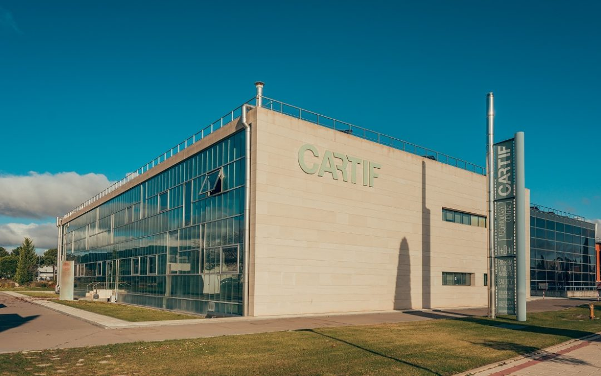

About us
CARTIFactory

CARTIFactory provides companies, researchers, and public organizations with access to cutting-edge technologies such as:
Collaborative robotics
Generative Artificial Intelligence (GenAI)
Digital twins
Industrial Internet of Things (IIoT)
Computer vision systems
Extended and mixed reality interfaces
The initiative is designed especially to help SMEs and industrial organizations experiment with digital transformation technologies in realistic environments.
A key aspect of CARTIFactory is its alignment with the Industry 5.0 vision, where technology is not only focused on productivity, but also on human well-being, sustainability, resilience, and safe human–robot collaboration. The laboratory supports the development and validation of adaptive robotic behaviors, natural interaction interfaces, and interoperable industrial systems. The infrastructure includes collaborative robotic platforms, camera-based vision systems, mixed reality devices, interchangeable robotic tools, and industrial workstations. These technologies are currently being validated in practical use cases such as:
Assembly and disassembly of high-value products
Intelligent warehouse picking and logistics operations
Human–robot collaborative tasks
Productivity and safety evaluation in industrial environments
These applications originate from European innovation projects such as ARISE and 5R, which focus on collaborative robotics, AI, and digital twins for manufacturing and remanufacturing scenarios.
Another important element of CARTIFactory is its commitment to open standards and interoperability through technologies such as FIWARE, Fast DDS, Vulcanexus, and ROS4HRI. FIWARE provides the technological foundation for building modular and interoperable industrial solutions capable of real-time monitoring, IT/OT integration, predictive analytics, and plug-and-play deployment across different industrial sectors.
Through CARTIFactory, CARTIF aims to strengthen its position as a major innovation hub in Europe, helping industries transition toward smarter, safer, and more sustainable production systems while promoting collaboration between technology providers, researchers, and industrial stakeholders.
CARTIF
{kind=link}

CARTIF is an applied, horizontal research centre whose main mission is to offer innovative solutions to companies so that they can improve their processes, systems and products, increasing their competitiveness and creating new business opportunities. Legally it is a private, non-profit foundation, which was founded in 1994 at the University of Valladolid.
CARTIF develops R&D projects financed by private companies or through public funds obtained from competitive calls at national and international level. CARTIF also supports public entities (city councils, regional governments…) on high impact projects planning and development.
CARTIF is a multidisciplinary centre that works in multiple knowledge fields focused to many economic sectors: energy, food, industry, construction and infrastructures, health and environment, addressing research lines oriented to the main societal challenges, as industry 4.0, smart grids, smart cities, energy efficiency, cultural heritage, quality of life, circular economy, natural resources and biotechnology.
CARTIF has an analytical testing laboratory the offers analysis services to the centre and to other companies by means of a wide offer that includes 3D digitalization, biomass characterization, food biotechnology and material nanotechnology